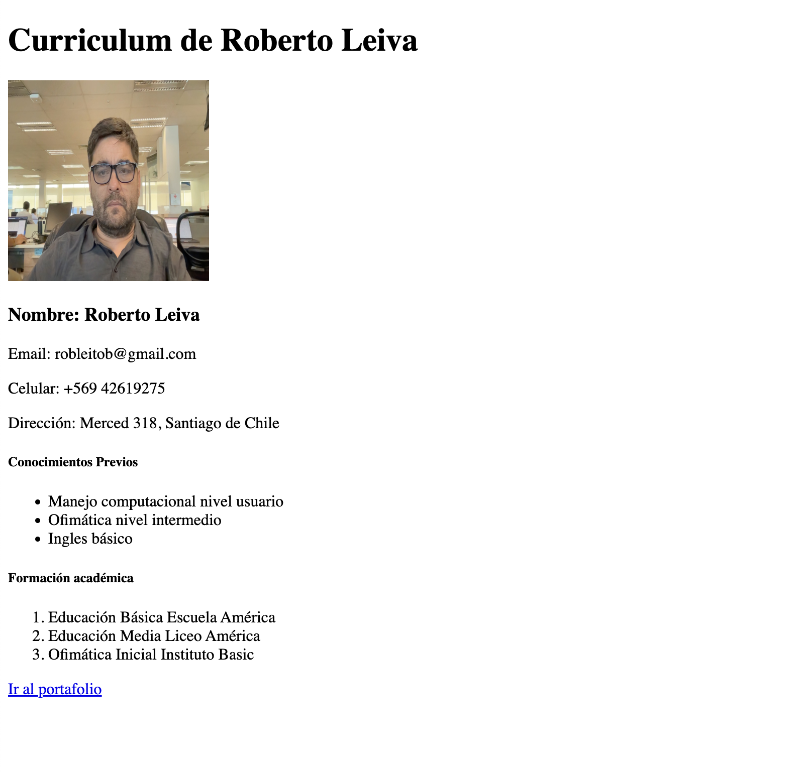
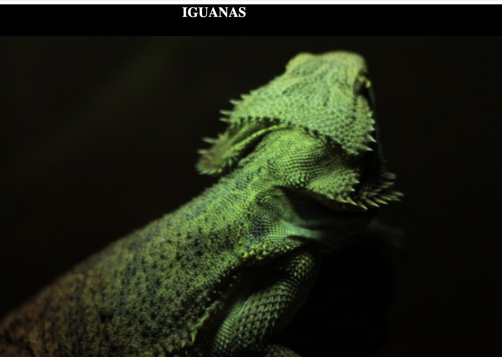
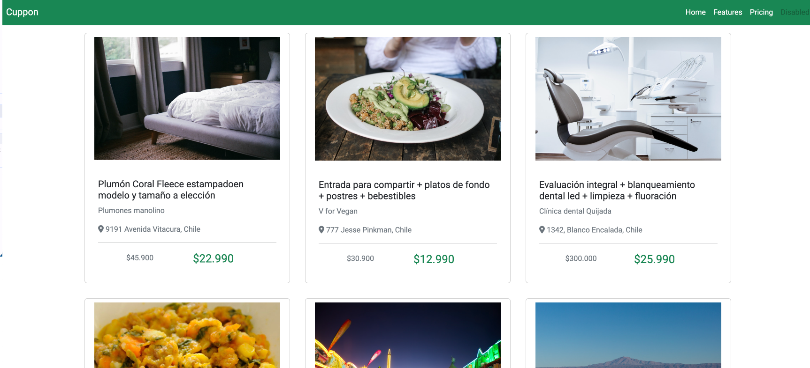

Portafolio

Desafio CV

Desafio Landing

Desafio Iguana

Soy Roberto Leiva, tengo 48 años y vivo en Santiago de Chile. Soy padre de dos hijos: uno de 6 años y otro de 18, quienes son mi orgullo y motivación. Me apasiona practicar fútbol, ya sea jugando con amigos o disfrutando de los partidos en casa. También me encanta andar en moto, lo que me permite explorar los hermosos paisajes de mi país. En mis momentos de descanso, disfruto de la lectura y del cine, encontrando en ambas actividades un espacio para la reflexión y el entretenimiento. Mi vida es un balance entre la familia, el deporte y mis pasiones personales.
Con más de 20 años de experiencia en el campo de la informática, me he especializado
en analizar problemas complejos y plantear soluciones efectivas. Mi enfoque se basa en
entender a fondo los desafíos técnicos y ofrecer respuestas claras y accesibles que
faciliten su resolución. Me apasiona aprender y mejorar continuamente, lo que me ha permitido
adquirir un amplio conocimiento en diversas áreas, como la gestión de flujos de trabajo y casos de uso.
A lo largo de mi carrera, he tenido la oportunidad de trabajar en equipos multifuncionales,
donde mi capacidad para comunicarme de manera clara y eficaz ha sido clave para lograr los objetivos.
Mi experiencia me ha enseñado la importancia del liderazgo colaborativo, el aprendizaje constante y la mentoría,
valores que considero fundamentales para el crecimiento profesional tanto propio como del equipo.
Mi enfoque siempre está en aportar soluciones prácticas, optimizar procesos y contribuir al éxito de las
iniciativas tecnológicas en las que participo, manteniendo un compromiso con la excelencia y la mejora continua.
Educacion Básica
Educacion Media
Ingeniería en Informática
Anlaista de Sistemas / Programador
Los asados en la Patagonia son una tradición profundamente arraigada, donde el cordero es el protagonista, cocido lentamente a la parrilla para resaltar su sabor. Reunirse alrededor del fuego con amigos y familiares se convierte en una celebración de la buena comida y la camaradería. Este ritual no solo satisface el paladar, sino que también crea memorias imborrables en un entorno natural impresionante.
En el sur de Chile, la diversidad de papas es asombrosa, con variedades que reflejan la riqueza de la tierra y la tradición agrícola. Entre ellas destacan la papa chilota, conocida por su sabor y textura, y la papa negra, que aporta un toque distintivo a los platos. Estas papas no solo son fundamentales en la cocina local, sino que también forman parte de la identidad cultural, celebrando la herencia y las costumbres de la región.
Los salmones de Alaska son famosos por su calidad y sabor excepcionales, siendo una de las principales especies pesqueras de la región. Hay varias variedades, como el salmón rojo y el salmón rey, cada una con características únicas que los hacen ideales para diferentes preparaciones culinarias. Además de su valor gastronómico, la pesca del salmón es crucial para la economía local y la cultura de las comunidades indígenas, que han practicado esta actividad durante generaciones.